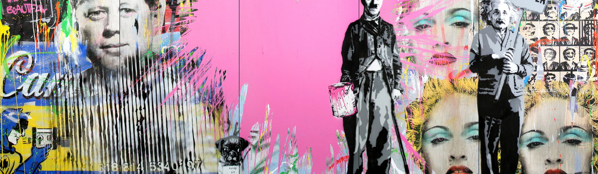

MR. BRAINWASH展
ARA Modern Art Museum
2017. 08. 02 - 2017. 10.06

ARA Modern Art Museum
2017. 08. 02 - 2017. 10.06
2010년 스트리트 아트의 거장 뱅크시(Banksy)가 감독한 “선물 가게를 지나야 출구 (Exit Through the Gift Shop”의 주인공으로 출연하면서 세계적으로 이름을 알리게 된 미스터 브레인워시는 이미 여섯 개 대륙에서 자신만의 스트리트 아트를 선보였고, 대형 아트쇼를 통해 백만명 이상의 관객들을 매혹시켰다. 스트리트 아트에서 시작해 팝 아트 영역으로까지 확장시키고 있는 그의 톡특한 작품 스타일은 미술평론가, 기자, 그리고 셀러브리티 등 수많은 저명인사들의 러브콜을 받고 있으며, 특히 마이클 잭슨의 ‘Xcape’ 앨범과 마돈나의 ‘Celebration’ 앨범의 아트워크 작업에 참여하는 등 다수의 콜라보레이션 작업으로 유명하다.
PHOTO
